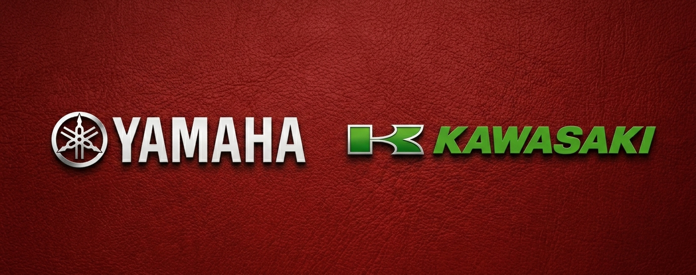
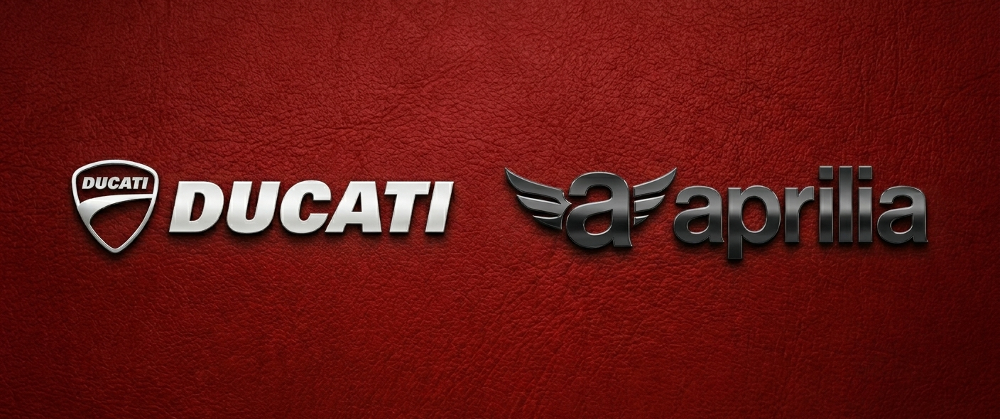

Yamaha and Kawasaki are two of the most respected motorcycle brands in the world, both originating from Japan and known for producing high-quality motorcycles. Yamaha is recognized for its combination of performance, reliability, and innovative technology. The company manufactures a wide range of motorcycles, from fuel-efficient commuter bikes to high-performance sport motorcycles, making it a popular choice for riders of all experience levels. Kawasaki is known for building powerful and exciting motorcycles that emphasize speed, performance, and aggressive styling. The brand has earned a strong reputation through its high-performance sport bikes and racing success. Kawasaki motorcycles are often favored by enthusiasts who appreciate powerful engines and advanced engineering. Both companies have made significant contributions to the motorcycle industry and continue to be leaders in innovation, design, and motorsports. Their motorcycles are sold worldwide and are trusted by millions of riders for their quality, durability, and performance.

Aprilia and Ducati are two of Italy’s most prestigious motorcycle manufacturers, renowned for their passion, performance, and racing heritage. Both brands are known for producing motorcycles that combine advanced technology with distinctive Italian design, making them highly respected among motorcycle enthusiasts around the world. Aprilia has built its reputation through success in international motorcycle racing and the development of high-performance sport bikes. The company is known for creating motorcycles that offer excellent handling, cutting-edge electronics, and impressive performance. Aprilia models are often praised for their lightweight construction, agility, and race-inspired engineering, making them popular among riders who value precision and speed. Ducati is one of the most iconic names in motorcycling and is famous for its powerful engines, premium craftsmanship, and unmistakable styling. The brand has a long history in professional racing and has produced some of the world’s most celebrated sport bikes and superbikes. Ducati motorcycles are known for their advanced technology, strong performance, and distinctive character, offering an exciting riding experience that appeals to enthusiasts and professionals alike. Both Aprilia and Ducati represent the excellence of Italian motorcycle engineering and continue to influence the global motorcycle industry through innovation, racing achievements, and high-performance machines.